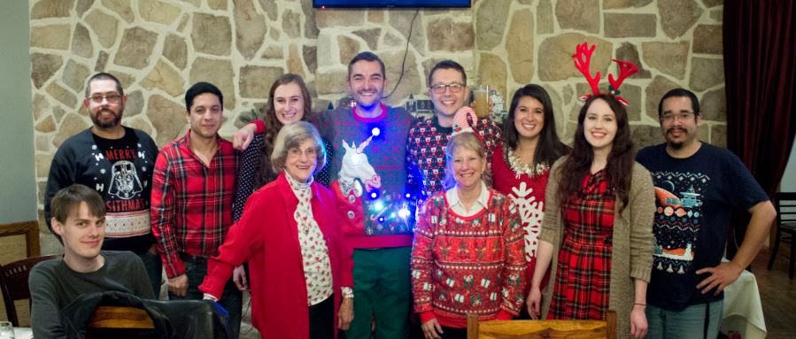

Blog
London in the Spring
A summary of my study abroad experience, December 3rd, 2018

On January 21st, 2018, I set off for London. I'd read every study abroad packing guide and advice blog out there, and yet sitting alone on that plane, I didn't know what to expect. I had never been away from home for so long, and the thought of navigating a big city all alone was as daunting as it was exciting. As much as those feelings were confirmed when I touched down in London, I knew I had made the right decision.
Now, almost a year later, I know studying abroad in London was the single best decision I have ever made. I learned how London worked and it soon became home. I traveled all across England, seeing Stone Henge, Bath, Canterbury, and Liverpool. I even ventured outside the UK and visited Berlin, Dublin, Belfast, Paris, Lagos (Portugal), and Amsterdam.
Balancing school work, friends, and travel proved difficult, but I left London a more independent, culturally aware person than I was that scary day in January. I have made lasting memories and relationships, and I will carry those experiences with me for the rest of my life. And somewhere, 3,000 miles away, I will always have a second home.
Senior Intern
The long-term internship experience explained, December 3rd, 2018
From my very first semester at Arcadia, I've heard the same words of advice repeated countless times: get an internship. Two years ago today, I was an intimidated Sophomore in college blindly attending career fairs and doubting my likelihood of getting any position. Nonetheless, I went to the events I was told to go to, and a couple months later when I emailed a few of the names on the business cards I had gotten, I had landed an interview with Precision Systems, Inc, a local software engineering company. The next thing I knew, I was on my way to my first day of work as an intern.
Over a year later, I am still an intern at PSI, and I love my job. As a small company, the working environment is close-knit and supportive. The engineers are kind and helpful, happy to serve as mentors and friends at the same time. I have learned about so much more than I ever anticipated, and I never have to feel embarrassed about not knowing about a particular subject because learning is stressed as a part of everyone's job, even the experienced senior engineers. I am thankful that I heeded the advice I was given; internship experience is already proving invaluable, as I have been able to explore several subareas of Computer Science that I would have otherwise never looked into. I look forward to my future as a software engineer, taking with me everything I have learned as a student and intern.
About Me
My name is Elizabeth, and I'm a senior Computer Science major at Arcadia University.